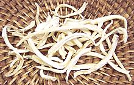
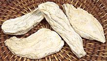

SAFARI
Users
Chinese Bellflower
 [Japanese Bellflower, Balloon Flower; Do-ra-ji (Korea); Platycodon grandiflorus]
Native to Northeast Asia (China, East Siberia, Korea and Japan) the root of this plant has long been used as an anti-inflammatory in China, but in Korea the root is popular in salads and in herbal cooking.
So far I've found it only in the dried form shown in the photo, labeled
Bellflower or Platycodon depending on brand. The specimens were obtained
from a local Korean market.
Codonopsis
 [Bonnet Bellflower; Todok (Korea); Codonopsis lanceolata]
Native to the edges of moist forests in East Asia, the root of this plant is used in cooking from Malaysia to Korea. The photo specimens were purchased from a Korean market in Los Angeles, packaged in a plastic bag.
In Korea Codonopsis is called Todok and is popular cooked fresh as a vegetable but fresh Todok isn't common here. The dried root should be soaked in warm salted water to soften it and draw out any bitterness. Slices such as are shown in the photo will take well over an hour of soaking time. Todok remains fairly firm and is somewhat fiberous so always cut crosswise and fairly thin.
Subst: Celery root is most similar in texture though different in flavor. Parsnip is way too sweet and gets way too soft.
This root, thought to have anti-cancer properties, is also reputed to
be an aphrodesiac tonic and is used medicinally to treat inflamation.
Another colonopsis species, Codonopsis pilosula, is important in
Chinese herbal medicine but not for cooking.
Rampion Bellflower
 [Rover Bellflower; Campanula rapunculus]
[Rover Bellflower; Campanula rapunculus]
This plant is native to Western Asia, North Africa and most of
Europe. It is absent from Ireland, Iceland and Norway, but has been
introduced to Denmark, southern Sweeden and England. It was formerly
widely cultivated in Europe for its spinach like leaves and its roots,
which were used like radishes.
Photo by Jean-Pol GRANDMONT distributed under license
Creative Commons
Attribution-ShareAlike v3.0 Unported, attribution reequired,
notification appreciated.
Serbian Bellflower
 [Trailing Bellflower; Campanula poscharskyana]
[Trailing Bellflower; Campanula poscharskyana]
Native to the Dinaric Alps along the Balkan west coast, the leaves
of this plant are edible year round and used in salads.
Photo by Kurt Stüber distributed under license Creative
Commons
Attribution-ShareAlike v3.0 Unported.